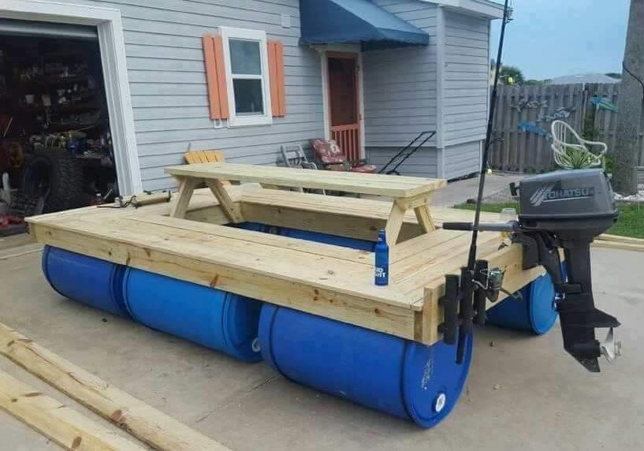
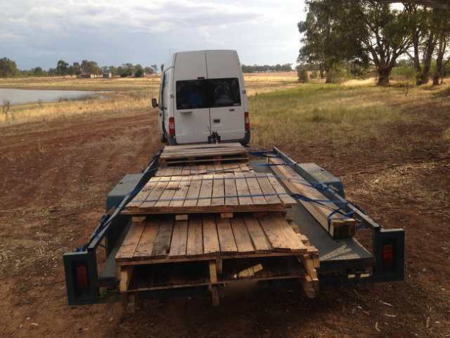
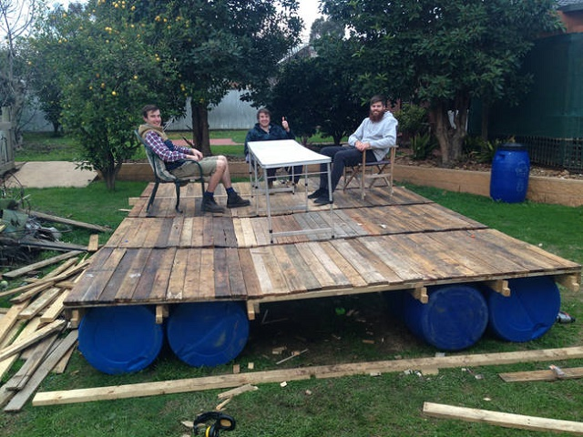
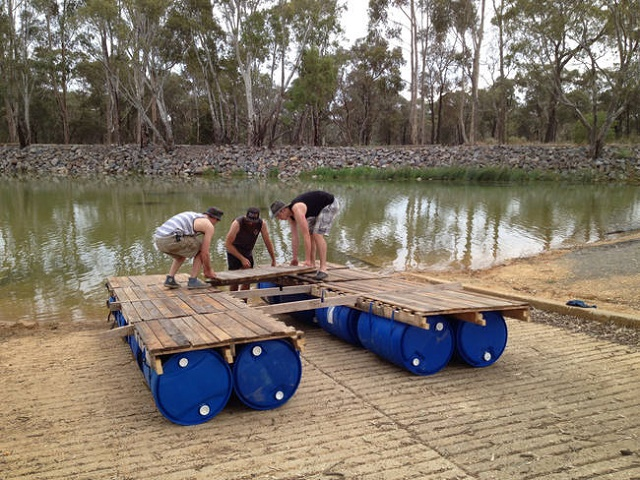
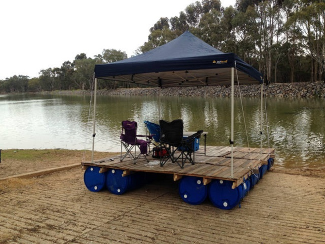
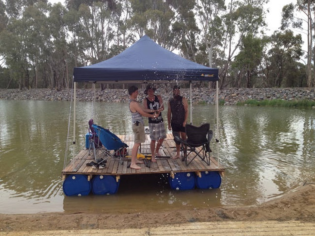

boats revision 5574
^ Projects infobox ^^
| image | Houseboat.scad.png |
| designer | |
| date | |
| vitamins | |
| materials | |
| transformations | |
| lifecycles | |
| tools | |
| parts | [[barrels|Barrels]], [[frames|Frames]], [[nuts|Nuts]], [[bolts|Bolts]], [[plates|Plates]], [[end_caps|End caps]] |
| techniques | [[shelf_joints|Shelf joints]], [[tri_joints|Tri joints]] |
| stl | |
| git | |
Introduction
Challenges
Approaches






Parts
- (316?) Stainless steel Frames
** $12/ft for 1.5"x0.062"wall in quantity from onlinemetals.com
** $7.13 / ft for 1.5"x.120"wall in quantity from Alro
- (316?) Stainless steel Nuts, Bolts
- Solar panels
References
- https://www.goodshomedesign.com/how-to-build-a-transportable-pontoon-raft-out-of-old-pallets-and-55-gallon-plastic-drums/2/
- C-head composting toilet
- Igloft houseboat
<youtube>P3-IjnIX_DM</youtube>